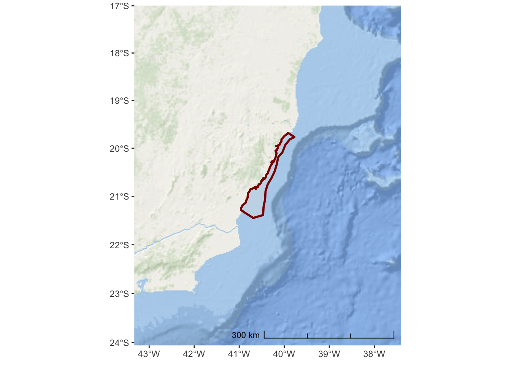
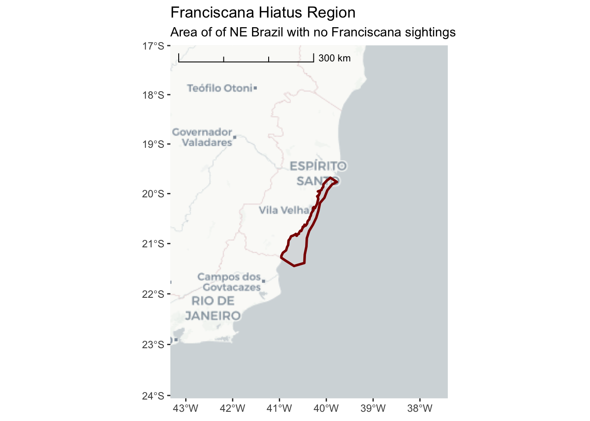
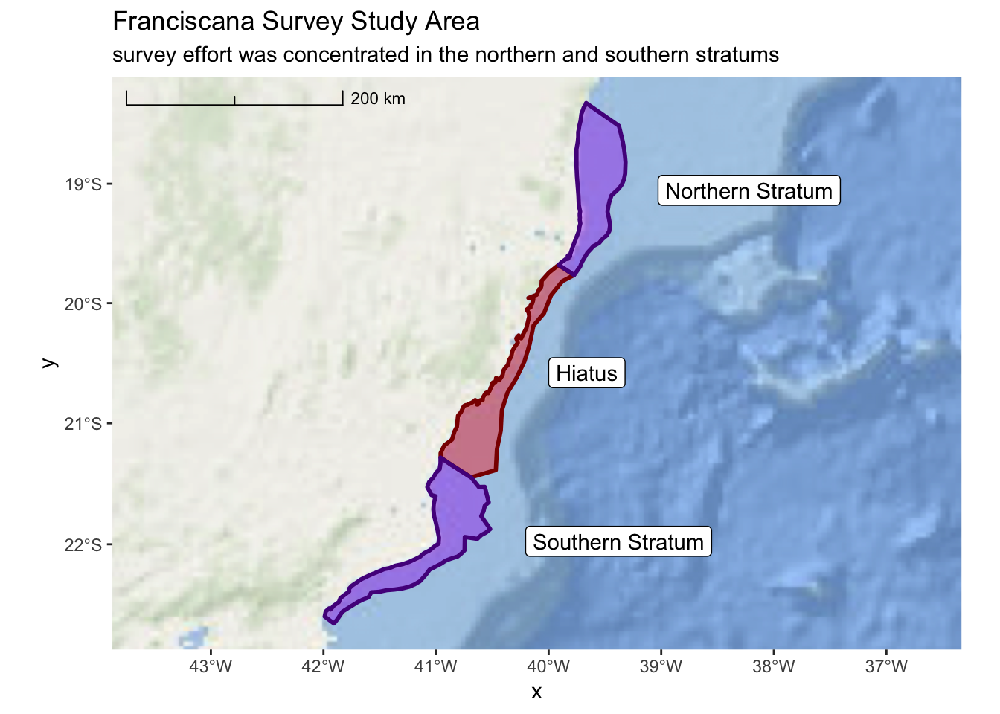

Section 3 Exercise #1: Loading Spatial Data
3.1 Load Shapefiles Into R
The sf package has wide-ranging support for importing various spatial
data/file formats. You can even import data directly from a spatially
enabled database (e.g. PostgreSQL/PostGIS). One of the more common spatial
file formats you may encounter is the ESRI Shapefile format.
Here, we will work with an example from a research effort surveying for Franciscana. Prior to the survey effort, there was a region identified as a hiatus, or gap, where there were no historical sightings of Franciscana. This region was defined and is provided as a Shapefile.
## ── Attaching packages ───────────────────────────────────────────────────── tidyverse 1.2.1 ──## ✔ ggplot2 3.1.0 ✔ purrr 0.2.5
## ✔ tibble 1.4.2 ✔ dplyr 0.7.7
## ✔ tidyr 0.8.2 ✔ stringr 1.3.1
## ✔ readr 1.1.1 ✔ forcats 0.3.0## ── Conflicts ──────────────────────────────────────────────────────── tidyverse_conflicts() ──
## ✖ dplyr::filter() masks stats::filter()
## ✖ dplyr::lag() masks stats::lag()## Linking to GEOS 3.6.1, GDAL 2.1.3, PROJ 4.9.3## Linking to liblwgeom 2.5.0dev r16016, GEOS 3.6.1, proj.4 4.9.3provide the path to your shapefile directory. Note the path is based on the *.shp file.
hiatus_path <- file.path("..","data","Fraciscana_Example","Hiatus.shp")
hiatus <- sf::st_read(hiatus_path)## Reading layer `Hiatus' from data source `/Users/josh/r/solamac-spatial-mapping/data/Fraciscana_Example/Hiatus.shp' using driver `ESRI Shapefile'## Warning in CPL_read_ogr(dsn, layer, query, as.character(options), quiet, : GDAL Message 1: organizePolygons() received an unexpected geometry.
## Either a polygon with interior rings, or a polygon with less than 4 points,
## or a non-Polygon geometry. Return arguments as a collection.## Simple feature collection with 1 feature and 1 field
## geometry type: POLYGON
## dimension: XY
## bbox: xmin: -40.95967 ymin: -21.44691 xmax: -39.77479 ymax: -19.68095
## epsg (SRID): 4326
## proj4string: +proj=longlat +datum=WGS84 +no_defsThis demonstrates a common issue with Shapefiles. Sometimes they can be improperly
formed or corrupted. The lwgeom package has a function st_make_valid() which
can fix most of these issues. There is one additional step required
(sf::st_collection_extrac()) which simplifies the data object from a
“GEOMETRYCOLLECTION” to a single “POLYGON”. Don’t get too hung up on these steps
to ‘fix’ the Shapefile data. Unfortunately, it is just one of those things that
you might have to wrestle with when importing data. st_make_valid() and other
functions within R are helpful. But, you may still need to spend some time
Googling the error message or asking for help on Stack Overflow or Twitter.
Note that we are using the pipe (%>%) function in the code below. This is a
key component of the tidyverse and may be new to users more familiar with
standard R code.
library(lwgeom)
hiatus <- hiatus %>% lwgeom::st_make_valid() %>%
sf::st_collection_extract()
# base R version
# hiatus <- lwgeom::st_make_valid(hiatus)Now, let’s just do a quick plot of hiatus so we can verify it looks valid
3.2 First Map with ggplot
While this demonstrates that we have successfully imported the spatial data into
R, it is not a very satisfying map. We will use the ggplot2 package as the
basis for all of our mapping. If you are not already familiar with ggplot2, it
is a widely used framework for creating all types of plots and graphics from
within R. ggplot2 has special extensions and capabilities with respect to
simple features (sf) data that simplifies creation of publication quality
maps.
First, lets repeat our previous plot but this time with ggplot2
This is a nicer looking plot and, note, ggplot2 has kindly added graticule
ticks for the longitude and latitude values. It would be nice, however, if we
had some land and ocean features so we can better appreciate this hiatus region.
For this, we can use the ggspatial package to import map tiles hosted exernally
via the internet. In this first example, we will pull map tiles from the Open
Street Map service.
## Zoom: 7This is an improvement, but it might be better if we added some transparency to the hiatus polygon so we can see the land features underneath. We can also change the color and weight of the polygon outline so it stands out more.
ggplot() +
annotation_map_tile(type = "osm") +
layer_spatial(hiatus, col = "dark red", alpha = 0.4, size = 2)## Zoom: 7Now we have a slightly better sense of where we are in relation to the nearby
land. But, it might be useful to zoom out a bit more so we can get a better
sense of the areas location and nearby geograph. Note the arguments to
expand within scale_x_continuous and scale_y_continuous are in units
of degrees longitude and latitude.
While we are at it, we can also add a scale bar in the bottom right.
ggplot() +
annotation_map_tile(type = "osm") +
layer_spatial(hiatus, col = "dark red", alpha = 0.4, size = 1) +
scale_y_continuous(expand = c(1.5,1.5)) +
scale_x_continuous(expand = c(2,2)) +
annotation_scale(location = "br", width_hint = 0.5, style = "ticks")## Zoom: 6
The Open Street Map project is not really designed for environmental or marine centric maps. A better option might be the ESRI World Ocean Basemap which provides detailed bathymetry and topography for the entire globe.
We need to specify the URL location for the tile service:
esri_ocean <- paste0('https://services.arcgisonline.com/arcgis/rest/services/',
'Ocean/World_Ocean_Base/MapServer/tile/${z}/${y}/${x}.jpeg')And, then we can replace the annotation_map_tile() in the previous code
ggplot() +
annotation_map_tile(type = esri_ocean, progress = "none") +
layer_spatial(hiatus, col = "dark red", alpha = 0.4, size = 1) +
scale_y_continuous(expand = c(1.5,1.5)) +
scale_x_continuous(expand = c(2,2)) +
annotation_scale(location = "br", width_hint = 0.5, style = "ticks")
Now that we no longer have place names, it is important to add a title and subtitle to the map so we can inform the user about what this is and where it is in the world.
ggplot() +
annotation_map_tile(type = esri_ocean, progress = "none") +
layer_spatial(hiatus, col = "dark red", alpha = 0.4, size = 1) +
scale_y_continuous(expand = c(1.5,1.5)) +
scale_x_continuous(expand = c(2,2)) +
annotation_scale(location = "tl",
width_hint = 0.5,
style = "ticks") +
ggtitle("Franciscana Hiatus Region",
subtitle = "Area of of NE Brazil with no Franciscana sightings")
There are variety of other style options available for tile maps that you can explore. Here are some additional tiles that you might prefer
3.2.1 cartolight
ggplot() +
annotation_map_tile(type = "cartolight", progress = "none") +
layer_spatial(hiatus, col = "dark red", alpha = 0.4, size = 1) +
scale_y_continuous(expand = c(1.5,1.5)) +
scale_x_continuous(expand = c(2,2)) +
annotation_scale(location = "tl",
width_hint = 0.5,
style = "ticks") +
ggtitle("Franciscana Hiatus Region",
subtitle = "Area of of NE Brazil with no Franciscana sightings")
3.2.2 Microsoft Bing Aerial Imagery
ggplot() +
annotation_map_tile(type = "http://ecn.t3.tiles.virtualearth.net/tiles/a${q}.jpeg?g=1", zoomin = 1, progress = "none") +
layer_spatial(hiatus, col = "dark red", alpha = 0.4, size = 1) +
scale_y_continuous(expand = c(1.5,1.5)) +
scale_x_continuous(expand = c(2,2)) +
annotation_scale(location = "tl",
width_hint = 0.5,
style = "ticks") +
ggtitle("Franciscana Hiatus Region",
subtitle = "Area of of NE Brazil with no Franciscana sightings")
3.2.3 Projections
The data we imported from the shapefile is in lat-long coordinates. This is a convenient coordinate system and is the common system for storing geographic coordinates the world over. GPS, Satellite Telemetry, and many other systems store or record coordinates in lat-long. There are various formats for presenting lat-long coordinates (e.g. degrees minutes seconds, degrees decimal-minutes, decimal degrees). The most consistent and easiest format to work with is decimal degrees. If you can collect data in this format, then your analytical life will be much easier.
There are a nearly infinite number of possible projections. That said, there are a number of standard projections that have been developed for various regions and scales. You should spend some time researching projections used in your region and adopt a single projection that can serve as the standard for your analysis. In many cases the UTM zones may be a good place to start. If you cannot find a projection that specifically meets your needs, you can create a custom projection by adjusting parameters of an existing projection so the central region is centered on your data.
So, why bother? Why not just keep your data in lat-long? For some applications (and, in the spirit of keeping things simple), this may be a perfectly valid choice. However, lat-long degrees do not represent equal distance and computation of spatial features and various parameters are not as reliable.
Thankfully, R and sf make it really easy to set and transform your data from one
projection to another. In our initial example, here, the projection information is
read directly from the shapefile.
## Simple feature collection with 1 feature and 1 field
## geometry type: POLYGON
## dimension: XY
## bbox: xmin: -40.95967 ymin: -21.44691 xmax: -39.77479 ymax: -19.68095
## epsg (SRID): 4326
## proj4string: +proj=longlat +datum=WGS84 +no_defs
## Name geometry
## 1 <NA> POLYGON ((-40.815 -21.02993...Note there is both a epsg (SRID) entry and a proj4string. For standard projections,
the epsg code is the easiest and most reliable method for specifying a projection.
In some cases, however, you might need to specify a proj4string. If you don’t know
the epsg or proj4string for your projection of interest, searching at
(SpatialReference.org)[https://spatialreference.org] is a good place to start.
For South America, one possible projection to use is the South America Albers Equal
Area Conic. The epsg integer code is 102033 and the PROJ.4 text description is:
+proj=aea +lat_1=-5 +lat_2=-42 +lat_0=-32 +lon_0=-60 +x_0=0 +y_0=0 +ellps=aust_SA +units=m no_defsTo transform our hiatus object into this projection we can simply execute the
following
3.2.4 Survey Stratum
In addition to the hiatus region, the survey area was divided into a northern and
southern stratum. The ShapeFiles for these polygons are provided in the same
directory as the hiatus data. The file names are: Northern_stratum.shp and
Southern_stratum.shp. Remember, you’ll want to transform all of your
data into the South America Albers Equal Area Conic projection.
Before proceeding ahead, try creating a map on your own that includes all three areas of interest (hiatus and both stratums).
north_stratum <- file.path("..","data","Fraciscana_Example",
"Northern_stratum.shp") %>%
sf::st_read() %>%
sf::st_transform(102033)## Reading layer `Northern_stratum' from data source `/Users/josh/r/solamac-spatial-mapping/data/Fraciscana_Example/Northern_stratum.shp' using driver `ESRI Shapefile'
## Simple feature collection with 1 feature and 1 field
## geometry type: POLYGON
## dimension: XY
## bbox: xmin: -39.91068 ymin: -19.76477 xmax: -39.31677 ymax: -18.31996
## epsg (SRID): 4326
## proj4string: +proj=longlat +datum=WGS84 +no_defs# non-tidyverse
# north_path <- file.path("..","data","Fraciscana_Example",
# "Northern_stratum.shp")
# north_stratum <- sf::st_read(northern_path)
south_stratum <- file.path("..","data","Fraciscana_Example",
"Southern_stratum.shp") %>%
sf::st_read() %>%
sf::st_transform(102033)## Reading layer `Southern_stratum' from data source `/Users/josh/r/solamac-spatial-mapping/data/Fraciscana_Example/Southern_stratum.shp' using driver `ESRI Shapefile'
## Simple feature collection with 1 feature and 1 field
## geometry type: POLYGON
## dimension: XY
## bbox: xmin: -41.98923 ymin: -22.651 xmax: -40.51892 ymax: -21.28394
## epsg (SRID): 4326
## proj4string: +proj=longlat +datum=WGS84 +no_defs# non-tidyverse
# north_path <- file.path("..","data","Fraciscana_Example",
# "Northern_stratum.shp")
# north_stratum <- sf::st_read(northern_path)
franciscana_plot <-
ggplot() +
annotation_map_tile(type = esri_ocean, progress = "none") +
layer_spatial(hiatus, col = "dark red", fill = "red", alpha = 0.4, size = 1) +
layer_spatial(north_stratum, col = "purple4", fill = "purple", alpha = 0.4, size = 1) +
layer_spatial(south_stratum, col = "purple4", fill = "purple", alpha = 0.4, size = 1) +
geom_sf_label(north_stratum, mapping = aes(label = "Northern Stratum"), nudge_x = 150000) +
geom_sf_label(south_stratum, mapping = aes(label = "Southern Stratum"), nudge_x = 165000) +
geom_sf_label(hiatus, mapping = aes(label = "Hiatus"), nudge_x = 75000) +
scale_x_continuous(expand = c(0.5,0.5)) +
annotation_scale(location = "tl",
width_hint = 0.3,
style = "ticks") +
ggtitle("Franciscana Survey Study Area",
subtitle = "survey effort was concentrated in the northern and southern stratums")
franciscana_plot
3.3 Load Spatial CSV Data into R
3.3.1 Franciscana Sightings
sightings <- file.path("..","data","Fraciscana_Example",
"Franciscana_Example_Sighting_Data.csv") %>%
readr::read_csv() ## Parsed with column specification:
## cols(
## Date = col_character(),
## Matches = col_integer(),
## Event = col_character(),
## Time = col_character(),
## WayPoint = col_integer(),
## Effort = col_character(),
## Lat = col_double(),
## Long = col_double(),
## Line = col_character(),
## Observer = col_character(),
## Position = col_character()
## )## # A tibble: 20 x 11
## Date Matches Event Time WayPoint Effort Lat Long Line Observer
## <chr> <int> <chr> <chr> <int> <chr> <dbl> <dbl> <chr> <chr>
## 1 12.1… 0 A 7:48… 1 ON -22.2 -41.2 RJ24 Emanuel…
## 2 12.1… 0 A 7:49… 2 ON -22.3 -41.2 RJ24 Emanuel…
## 3 12.1… 0 A 8:01… 3 ON -22.2 -41.4 RJ25 Emanuel…
## 4 12.1… 0 A 8:09… 4 ON -22.3 -41.3 RJ26 Emanuel…
## 5 12.1… 0 A 10:3… 5 ON -22.1 -41.1 RJ19 Emanuel…
## 6 13.1… 0 A 9:10… 6 ON -21.6 -41.0 RJ08 Emanuel…
## 7 12.1… 1 A 0.33… 7 ON -22.2 -41.4 RJ25 Daniel …
## 8 12.1… 1 A 0.33… 8 ON -22.2 -41.4 RJ25 Daniel …
## 9 12.1… 0 A 0.33… 9 ON -22.3 -41.3 RJ26 Daniel …
## 10 12.1… 1 A 0.43… 10 ON -22.1 -41.0 RJ 19 Daniel …
## 11 12.1… 1 A 0.43… 11 ON -22.1 -41.0 RJ 19 Daniel …
## 12 12.1… 0 A 0.32… 12 ON -22.2 -41.3 RJ24 Federic…
## 13 12.1… 0 A 0.34… 13 ON -22.2 -41.5 RJ27 Federic…
## 14 12.1… 0 A 0.34… 14 ON -22.2 -41.5 RJ27 Federic…
## 15 12.1… 0 A 0.43… 15 ON -22.1 -41.1 RJ20 Federic…
## 16 07.0… 0 A 8:49… 16 OFF -19.7 -39.9 N Emanuel…
## 17 07.0… 0 A 8:49… 17 OFF -19.7 -39.9 N Emanuel…
## 18 07.0… 0 A 8:49… 18 OFF -19.7 -39.9 N Emanuel…
## 19 08.0… 0 A 6:49… 19 OFF -19.5 -39.7 N Emanuel…
## 20 08.0… 0 A 9:33… 20 OFF -19.9 -40.1 N Emanuel…
## # ... with 1 more variable: Position <chr>As we look at this CSV file, we can see that each record represents a spatial point that
corresponds with a Franciscana sighting. Note that our coordinates are recorded in
the Lat and Long columns and the units are decimal degrees. With this information we
can turn our sightings data into an sf object. Note that we will set our data initially
to epsg 4326. Then, we transform to our common projection.
sightings <- sightings %>%
sf::st_as_sf(coords = c("Long","Lat")) %>%
sf::st_set_crs(4326) %>%
sf::st_transform(102033)We will also be interested in distinguishing between “ON” and “OFF” effort sightings. So, we will modify this column into a factor.
3.3.2 Realized Survey Effort
In order to properly interpret the sightings data, we also need to know the survey effort that was realized during the study. These data are provided as a CSV.
realized_effort <- file.path("..","data","Fraciscana_Example",
"Franciscana_Example_Realized_Effort.csv") %>%
readr::read_csv()## Parsed with column specification:
## cols(
## Index = col_integer(),
## LineLabel = col_character(),
## Date = col_character(),
## LatD_Beg = col_double(),
## LongD_Beg = col_double(),
## LatD_End = col_double(),
## LongD_End = col_double(),
## Length = col_double()
## )## # A tibble: 83 x 8
## Index LineLabel Date LatD_Beg LongD_Beg LatD_End LongD_End Length
## <int> <chr> <chr> <dbl> <dbl> <dbl> <dbl> <dbl>
## 1 1 E 25 17.dez -19.6 -39.7 -19.5 -39.8 12.4
## 2 2 E 26 17.dez -19.6 -39.8 -19.6 -39.7 11.6
## 3 3 E 27 17.dez -19.7 -39.7 -19.6 -39.8 10.9
## 4 4 E24 5.jan -19.5 -39.7 -19.6 -39.6 14.0
## 5 5 ES 07b 8.jan -18.8 -39.4 -18.6 -39.7 40.5
## 6 6 ES 01 <NA> -18.4 -39.5 -18.3 -39.7 16.8
## 7 7 ES 02 <NA> -18.4 -39.7 -18.5 -39.5 19.2
## 8 8 ES 03 <NA> -18.6 -39.3 -18.4 -39.7 45.2
## 9 9 ES 04 <NA> -18.5 -39.7 -18.7 -39.3 48.4
## 10 10 ES 05 <NA> -18.8 -39.3 -18.5 -39.7 50.9
## # ... with 73 more rowsIf we examine these data, we see the structure provides four columns (LatD_Beg,
LatD_End, LongD_Beg, and Long_End) that represent our coordinates. These are
the start and end points for each line. Since these data actually represent lines,
we need to come up with a process for converting them to lines.
These next few steps involve some intermediate to advance tidyverse skills. Don’t worry if you don’t grasp everything right away. We will take things slowly and step by step. The functions
gatherandspreadwithin thetidyrpackage sometimes especially difficult for new users to fully appreciate.
The first step is we need to tidy the data frame. One of the key principles of tidy
is that every record is an observation and ever column is a data field. In this
situation, we have coordinates spread across 4 different columns. We would prefer to
see a single column for latitude and another for longitude. Then, we would have
a third column that specifies the label (begin or end). From this, we could group the
points by Index and convert our sf geometry to “LINESTRING”.
The first step is to use the tidyr::gather() function to make our data frame less
wide. We are going to gather the information in the four coordinate columns into
two new columns label, and coordinate.
realized_effort <- realized_effort %>%
gather(key = label, value = coordinate, LatD_Beg, LatD_End, LongD_Beg, LongD_End) %>%
tidyr::separate(label,c("longlat","beginend"),"_") %>%
dplyr::mutate(longlat = ifelse(longlat == "LatD","latitude","longitude"),
beginend = ifelse(beginend == "Beg","begin","end")) %>%
dplyr::arrange(Index, LineLabel, Date)
realized_effort## # A tibble: 332 x 7
## Index LineLabel Date Length longlat beginend coordinate
## <int> <chr> <chr> <dbl> <chr> <chr> <dbl>
## 1 1 E 25 17.dez 12.4 latitude begin -19.6
## 2 1 E 25 17.dez 12.4 latitude end -19.5
## 3 1 E 25 17.dez 12.4 longitude begin -39.7
## 4 1 E 25 17.dez 12.4 longitude end -39.8
## 5 2 E 26 17.dez 11.6 latitude begin -19.6
## 6 2 E 26 17.dez 11.6 latitude end -19.6
## 7 2 E 26 17.dez 11.6 longitude begin -39.8
## 8 2 E 26 17.dez 11.6 longitude end -39.7
## 9 3 E 27 17.dez 10.9 latitude begin -19.7
## 10 3 E 27 17.dez 10.9 latitude end -19.6
## # ... with 322 more rowsNow, we can use the tidyr::spread() function to create a separate longitude and
latitude column to represent our coordinate data. We will then convert this into an
sf object. This will create a “POINT” data type, but we can use dplyr::group_by()
to identify our lines and then summarise() plus sf::st_cast() to create our final
sf data table of effort lines.
realized_effort <- realized_effort %>%
tidyr::spread(longlat,coordinate) %>%
sf::st_as_sf(coords = c("longitude","latitude")) %>%
sf::st_set_crs(4326) %>%
sf::st_transform(102033) %>%
dplyr::group_by(Index, LineLabel,Date) %>% summarise(do_union = FALSE) %>%
sf::st_cast("LINESTRING")
realized_effort## Simple feature collection with 83 features and 3 fields
## geometry type: LINESTRING
## dimension: XY
## bbox: xmin: 1756252 ymin: 987612.3 xmax: 2072998 ymax: 1453614
## epsg (SRID): 102033
## proj4string: +proj=aea +lat_1=-5 +lat_2=-42 +lat_0=-32 +lon_0=-60 +x_0=0 +y_0=0 +ellps=aust_SA +units=m +no_defs
## # A tibble: 83 x 4
## # Groups: Index, LineLabel [83]
## Index LineLabel Date geometry
## <int> <chr> <chr> <LINESTRING [m]>
## 1 1 E 25 17.dez (2026994 1310557, 2018202 1318937)
## 2 2 E 26 17.dez (2015704 1314816, 2023879 1306793)
## 3 3 E 27 17.dez (2021027 1302856, 2013277 1310332)
## 4 4 E24 5.jan (2020236 1323208, 2030377 1313936)
## 5 5 ES 07b 8.jan (2063877 1396062, 2035041 1423532)
## 6 6 ES 01 <NA> (2057211 1441935, 2045444 1453614)
## 7 7 ES 02 <NA> (2043101 1449889, 2056611 1436693)
## 8 8 ES 03 <NA> (2072599 1414326, 2041625 1446426)
## 9 9 ES 04 <NA> (2038434 1439969, 2072996 1407222)
## 10 10 ES 05 <NA> (2072998 1400390, 2036802 1434932)
## # ... with 73 more rowsLastly, lets add these lines to our previous map so we can see everything combined.
3.4 Multiple Panels in a Plot
In our previous example, it can be difficult to assertain any detail from the sightings
data at the larger scale. We might want to zoom in on each region and just show the
sightings within a particular region. This can be easily accomplished with the sf package.
north_sightings <- sightings[north_stratum,]
hiatus_sigthings <- sightings[hiatus,]
south_sightings <- sightings[south_stratum,]Now, we can create a plot that focuses on each region
franciscana_north_plot <-
ggplot() +
annotation_map_tile(type = esri_ocean, zoomin = 0, progress = "none") +
layer_spatial(north_stratum, col = "dark red", fill = "red", alpha = 0.4, size = 1) +
layer_spatial(realized_effort[north_stratum,]) +
layer_spatial(sightings[north_stratum,], mapping = aes(fill = Effort), size = 3,
shape = 21) +
scale_fill_manual(values = c("black","white"), drop = FALSE) +
scale_x_continuous(expand = c(0.25,0.25)) +
annotation_scale(location = "tl",
width_hint = 0.3,
style = "ticks") +
theme(legend.position="bottom") +
ggtitle("Franciscana Sightings",
subtitle = "northern stratum")
franciscana_north_plotfranciscana_hiatus_plot <-
ggplot() +
annotation_map_tile(type = esri_ocean, zoomin = 0, progress = "none") +
layer_spatial(hiatus, col = "dark red", fill = "red", alpha = 0.4, size = 1) +
layer_spatial(realized_effort[hiatus,]) +
layer_spatial(sightings[hiatus,],
mapping = aes(fill = Effort),
size = 3, shape = 21) +
scale_fill_manual(values = c("black","white"), drop = FALSE) +
scale_x_continuous(expand = c(0.25,0.25)) +
annotation_scale(location = "tl",
width_hint = 0.3,
style = "ticks") +
theme(legend.position="bottom") +
ggtitle("Franciscana Sightings",
subtitle = "hiatus region")
franciscana_hiatus_plotfranciscana_south_plot <-
ggplot() +
annotation_map_tile(type = esri_ocean, zoomin = 0, progress = "none") +
layer_spatial(south_stratum, col = "dark red", fill = "red", alpha = 0.4, size = 1) +
layer_spatial(realized_effort[south_stratum,]) +
layer_spatial(sightings[south_stratum,],
mapping = aes(fill = Effort), size = 3, shape = 21) +
scale_fill_manual(values = c("black","white"), drop = FALSE) +
scale_x_continuous(expand = c(0.25,0.25)) +
annotation_scale(location = "tl",
width_hint = 0.3,
style = "ticks") +
theme(legend.position="bottom") +
ggtitle("Franciscana Sightings",
subtitle = "southern stratum")
franciscana_south_plot##
## Attaching package: 'gridExtra'## The following object is masked from 'package:dplyr':
##
## combine